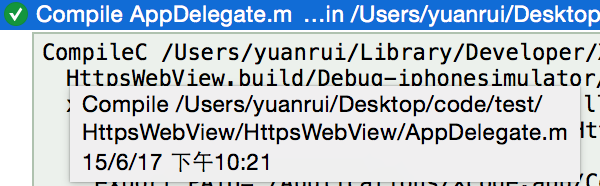
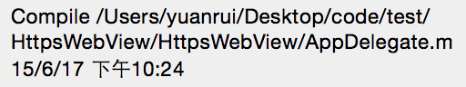
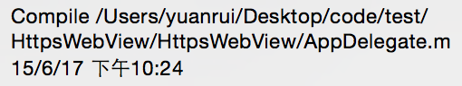

对于编译器来说，编译的对象是实现文件，比如C语言就是后缀名是c的文件，C++就是cpp，Objective-c就是m，而头文件则是用来定义类或者变量的，他们被实现文件引入，在预编译阶段加入到实现文件中。之所以需要引用头文件，是因为下面的实现可能引用到了一个类或者一个变量，而编译器需要知道他们的类型来生成汇编代码。比如在头文件中定义了一个结构体
struct TestStruct {
int value1 ;
int value2 ;
};
然后在一个实现文件中引用了这个结构体
struct TestStruct st ;
st.value2 = 10 ;
编译器遇到符号st和st.value2时，他不知道任何他们的信息，不知道它需要占用多少空间，不知道value2相对于st首地址的位置，所以没有办法生成对应的汇编代码。这就是为什么我们需要知道对一个变量或者类的定义，目的是为了为编译器提供有足够的信息产生汇编代码。那么前置声明是什么？前置声明是告诉编译器对一个变量的定义在后面可以找到，类的前置声明在Objective-C中写作@class xxx，我们今天主要讨论的是类，其他类型也是类似的原理。不过如果实现文件不需要这个类的定义，那即使后面没有找到类定义也没关系。看过很多书里面都说要尽量在头文件中使用前置声明，它到底有什么作用呢？我今天用例子说明它的作用。
我的工程里有2个module类，分别是Module1、Module2，一个用来管理module类的Manager类，其头文件如下
#if 1
#import "Module1.h"
#import "Module2.h"
#else
@class Module1;
@class Module2;
#endif
@interface Manager : NSObject
@property (nonatomic, strong) Module1 *m1 ;
@property (nonatomic, strong) Module2 *m2 ;
+ (instancetype)sharedManager ;
@end
Manager是一个单例，其他地方都是通过[Manager sharedManager]来获取Manager的实例，进而access两个Module对象。在Manager类头文件中，我有两个选择:
- import “Module1.h”和”Module2.h”
- 使用前置声明@class Module1 @class Module2，然后在Manager的实现文件中import这两个头文件
现在比如在AppDelegate.m中使用了Module1，贴出代码：
int value = [Manager sharedManager].m1.module1Value ;
NSLog(@"%d", value) ;
首先可以肯定的是在AppDelegate.m中要import “Manager.h”。如果在Manager中使用了第一种方式，即import module类的头文件，那么在AppDelegate.m中可以不用再import “Module1.h”了。如果Manager中使用了第二种方式，即前置声明，那么在AppDelegate.m中需要import “Module1.h”，注意，这里不需要import “Module2.h”，因为AppDelegate.m中没有引用Module2。
我先提醒一下，此时在Manager.m中使用的是引用头文件的方式，即方式1。写完代码我编译一下。在Report navigator中看最近的build记录，选中一个文件，然后展开它，鼠标滑到它的下面一点的位置会出现一个提示框，告诉我们这个文件最近的编译时间。

比如AppDelegate.m，显示的是下午10点21分
下面我来修改一下Module2.h，再来build一下看看结果

可以看到AppDelegate.m被重新编译了，这可以理解，因为它import了Manager.h，而Manager.h又import了Module2.h，由于Module2.h被修改了，所以AppDelegate.m也需要被重新编译，即使它没有使用Module2这个类，编译器还没有那么智能，今后会的。
让我们看看第二个种方式，在Manager.h中使用前置声明，先要修改Manager.h，把#if 1改成#if 0，build一下

因为修改了Manager.h，所以AppDelegate.m会重新编译，这是正常的，此时我再修改Module2.h，再build一下
时间还是10点24分，说明这种情况下不会重新编译AppDelegate.m。
结论：假设B.h使用了A.h中定义的对象，C.m引用了B.h，但是他并没有使用A.h中定义的对象，但是此时如果A.h有修改，所有import B.h的.m文件(C.m)都需要重新编译，没有使用A.h中定义的对象的实现文件(例如c.m)是不需要编译的，这就造成了编译时间的延长。如果A.h中使用前置声明的话，A.h修改之后，任何包含B.h的.m文件都不需要重新编译，除非他引用了A.h中定义的对象，那么在它的实现文件中需要import A.h。
我们的例子十分简单，在实际的项目中，如果不使用前置声明，一个头文件的修改将导致大量的实现文件被重新编译，这时使用前置声明的效果就非常明显了。我相信如果大家都能够使用前置声明，那么困扰你的编译时间过长的问题将得到解决。
ps:前置声明也可以用来解决类的循环引用的问题，不过这不是我今天想讨论的内容 :)